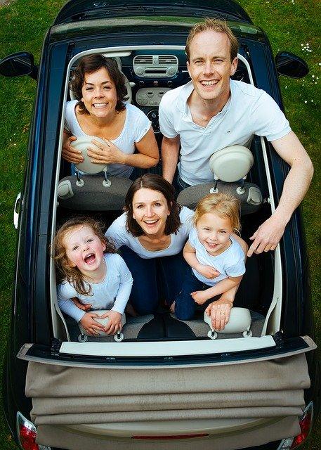

Target Audience
Our target audience is the perspective and small business owners, as well as any potential residents.This is in line with our vision and purpose for the future. This website is meant to be a forum for small businesses and perspective consumers to be able to connect and get to know one another. This allows perspective and current residents to get to know the community by interacting with local businesses and learning about the services they provide. We hope to build both the business owner and the consumer with the confidence to do business with each other.
Betty Business Owner

In the picture above we see one of our local business owners Betty as she discusses ways to improve business with her team. Betty's goal is to become involved in the community and expand her business through her customers. Through our website she can help the community get to know her and her business. This is helpful for our residents and future residents.
Cole and Family
Speaking of residents here we have a photo of our resident Cole and his family. Our goal is to provide Cole and his family easy access to information about local businesses and the best places to shop according to their needs.